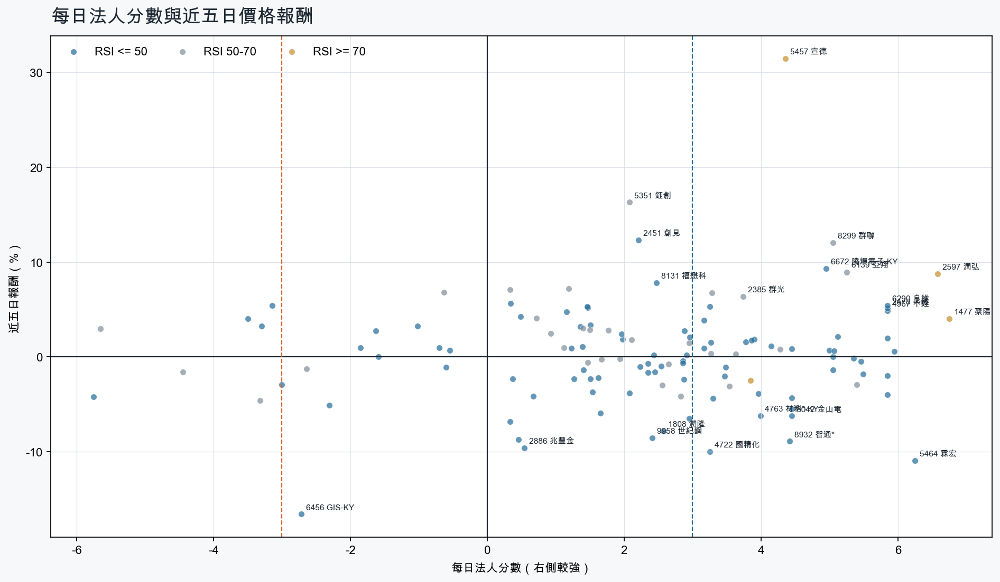
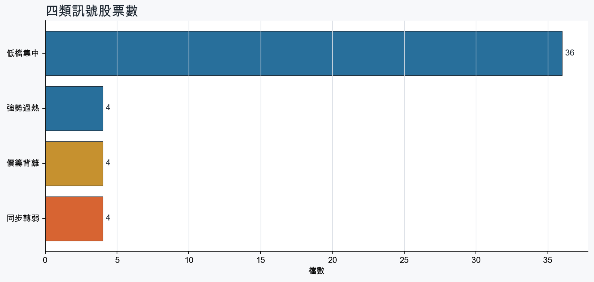
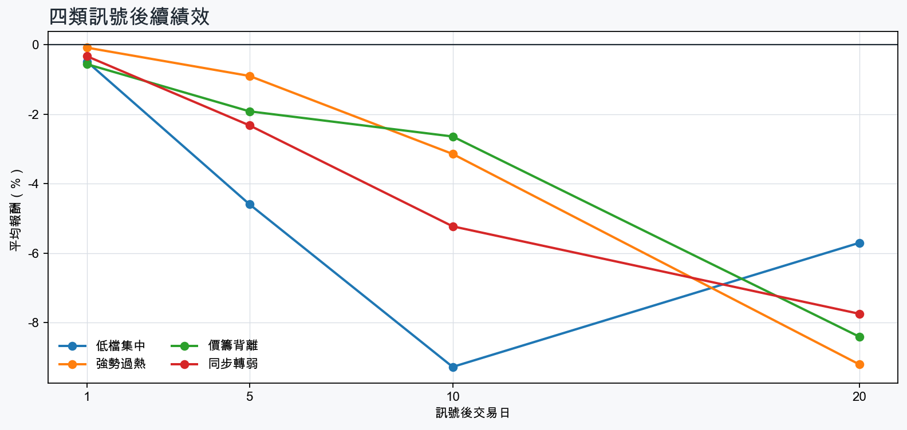

市場情緒中性分歧
近5日法人合計-6,416,064 張
篩選池上漲比例52.8%
籌碼好 / RSI低15 檔
籌碼差 / 價跌4 檔



EPS × PE VALUATION
法人常用的相對估值
顯示保守、基準與樂觀估值帶，不把單一數字包裝成精準目標價。
最新累計 EPS 依季數年化 × 同產業有效 P/E 的 Q25／中位數／Q75。排除本公司、非正 P/E，並以 1.5×IQR 排除離群值。估值帶是公開資料篩選值，不是法人目標價；未使用分析師預估 EPS。
MOOD × MONEY
情緒與籌碼雷達
熱度代表被討論程度；情緒分與法人方向分開計算。熱門不等於適合追價，樣本不足也不硬判多空。
| 股票 | 情緒 | 討論熱度 | 情緒 × 籌碼 | 情緒 × 基本面 |
|---|---|---|---|---|
| 0050 元大台灣50價籌背離 | 偏空 -33.1信心 100 | 1005 篇 / 1021 留言 / 3 則新聞 | 情籌雙弱法人分 -5.7 | 基本面與情緒分歧基本面分 +0.0 |
| 3374 精材同步轉弱 | 中性分歧 +0.0信心 30 | 330 篇 / 0 留言 / 3 則新聞 | 情籌混合法人分 -5.8 | 基本面與情緒分歧基本面分 +3.6 |
| 2889 國票金同步轉弱 | 偏多 +29.7信心 30 | 330 篇 / 0 留言 / 3 則新聞 | 熱門但法人撤退法人分 -3.0 | 基本面與情緒共振基本面分 +1.5 |
| 2468 華經同步轉弱 | 中性分歧 +0.0信心 30 | 330 篇 / 0 留言 / 3 則新聞 | 情籌混合法人分 -4.5 | 基本面與情緒分歧基本面分 +1.7 |
| 1409 新纖價籌背離 | 中性分歧 +0.0信心 30 | 330 篇 / 0 留言 / 3 則新聞 | 情籌混合法人分 -3.3 | 基本面與情緒分歧基本面分 +2.8 |
| 5522 遠雄強勢過熱 | 偏多 +29.7信心 30 | 330 篇 / 0 留言 / 3 則新聞 | 情籌共振法人分 +3.9 | 基本面與情緒共振基本面分 +1.8 |
| 5457 宣德強勢過熱 | 中性分歧 +0.0信心 30 | 330 篇 / 0 留言 / 3 則新聞 | 情籌混合法人分 +4.4 | 基本面與情緒分歧基本面分 -2.6 |
| 5871 中租-KY低檔集中 | 中性分歧 +0.0信心 30 | 330 篇 / 0 留言 / 3 則新聞 | 情籌混合法人分 +3.3 | 基本面與情緒分歧基本面分 +1.7 |
| 2481 強茂低檔集中 | 偏多 +29.7信心 30 | 330 篇 / 0 留言 / 3 則新聞 | 情籌共振法人分 +5.0 | 基本面與情緒共振基本面分 +3.6 |
| 3013 晟銘電低檔集中 | 偏多 +29.7信心 30 | 330 篇 / 0 留言 / 3 則新聞 | 情籌共振法人分 +5.5 | 基本面與情緒共振基本面分 +3.6 |
| 2426 鼎元低檔集中 | 偏空 -29.7信心 30 | 330 篇 / 0 留言 / 3 則新聞 | 法人布局、市場悲觀法人分 +5.5 | 基本面佳、情緒悲觀基本面分 +3.0 |
| 2485 兆赫低檔集中 | 中性分歧 +0.0信心 30 | 330 篇 / 0 留言 / 3 則新聞 | 情籌混合法人分 +3.5 | 基本面與情緒分歧基本面分 +1.2 |
01
籌碼好 / RSI低
優先研究基本面；法人續買且價格止穩時，才適合分批觀察。
| 股票 / 確認狀態 | 每日法人分 | 浦男式近似 | 法人加速度 | RSI / 相對強弱 | 量價確認 | 融資融券 | 每週集保確認 | 基本面 | EPS × 同業 P/E 估值 | 情緒 / 情籌 | 近期消息 | 論壇討論 |
|---|---|---|---|---|---|---|---|---|---|---|---|---|
| 5871 中租-KY等待確認 · 83 分籌碼有訊號，但價格尚未確認 | +3.3法人 +9,704 張 / 4 天 | 接近 · 76法人籌碼偏多；法人買盤加速；買超具延續性；留意未站月線、中期均線未翻多 | +9,270 張近3日 +10,663 / 連續 +4 日 | 48.5相對大盤 +10.0% | 量比 2.12確認分 +3.0收盤跌破20日線；20日線低於60日線 | -%融資 - 張 / 融券 - 張 | -0.15 pp1000張 +0.26 pp | 單月營收年增 +3.6%；2026 Q3 累計 EPS 8.73；2026 Q3 累計營益率 30.5%累計營收年增 -0.0%來源：公開資訊觀測站 | 基準 NT$ 134.9估值帶 117.1–194.7現價 101.0 · 低於估值帶 · 距基準 +33.6%2026 Q3 累計 EPS 8.73 → 年化 11.64其他同業 P/E 10.06／11.59／16.73 · n=64 · 信心較高以 Q3 累計 EPS 年化，不等同分析師全年預估來源：TWSE／TPEx 每日本益比 | 中性分歧 +0.0熱度 33 / 信心 30情籌混合 | 《台北股市》投信25日賣超股：國泰金、長榮、中租-KY富聯網 · 11/26三大法人買賣超– 外資買超(2882)國泰金、(5871)中租-KY，投信買超(2412)中華電、(2330)台積電，法人合計賣超1230.11億元(1124)｜豐雲學堂2026 年 11 月永豐金證券 · 11/24 | 近期沒有明確提及本股的論壇樣本 |
| 9945 潤泰新等待確認 · 65 分籌碼有訊號，但價格尚未確認 | +3.5法人 +5,121 張 / 5 天 | 接近 · 63法人籌碼偏多；買超具延續性；明顯強於大盤；留意未站月線、中期均線未翻多 | -1,387 張近3日 +2,895 / 連續 +7 日 | 47.6相對大盤 +5.1% | 量比 0.57確認分 -1.7收盤跌破20日線；20日線低於60日線；成交量不足；法人買盤減速 | -%融資 - 張 / 融券 - 張 | +0.23 pp1000張 +0.24 pp | 單月營收年增 +47.7%；累計營收年增 +30.9%；2026 Q3 累計 EPS 5.14仍需觀察下一期財報延續性來源：公開資訊觀測站 | 基準 NT$ 79.43估值帶 68.94–114.7現價 26.05 · 低於估值帶 · 距基準 +204.9%2026 Q3 累計 EPS 5.14 → 年化 6.85其他同業 P/E 10.06／11.59／16.73 · n=64 · 信心較高以 Q3 累計 EPS 年化，不等同分析師全年預估來源：TWSE／TPEx 每日本益比 | 樣本不足 +0.0熱度 0 / 信心 0情緒樣本不足 | 近期沒有通過股票語境篩選的新聞 | 近期沒有明確提及本股的論壇樣本 |
| 2481 強茂等待確認 · 56 分籌碼有訊號，但價格尚未確認 | +5.0法人 +5,640 張 / 4 天 | 未命中 · 54法人籌碼偏多；買超具延續性；量價健康；留意未站月線、中期均線未翻多 | -3,061 張近3日 +1,362 / 連續 +2 日 | 41.9相對大盤 -21.4% | 量比 0.93確認分 -5.0收盤跌破20日線；20日線低於60日線；近20日弱於大盤；法人買盤減速 | -%融資 - 張 / 融券 - 張 | +0.41 pp1000張 +1.06 pp | 單月營收年增 +33.2%；累計營收年增 +21.6%；2026 Q3 累計 EPS 3.73仍需觀察下一期財報延續性來源：公開資訊觀測站 | 基準 NT$ 92.20估值帶 62.17–140.5現價 93.60 · 估值帶內 · 距基準 -1.5%2026 Q3 累計 EPS 3.73 → 年化 4.97半導體同業 P/E 12.50／18.54／28.25 · n=156 · 信心較高以 Q3 累計 EPS 年化，不等同分析師全年預估來源：TWSE／TPEx 每日本益比 | 偏多 +29.7熱度 33 / 信心 30情籌共振 | 強茂明年營收成長續高，獲利拚高可期- 新聞MoneyDJ · 11/26功率半導體｜強茂2028年EPS被上修，新產能尚未放量，市場為何提前調高獲利預期？論台廠的成長策略優分析 UAnalyze · 11/26 | 近期沒有明確提及本股的論壇樣本 |
| 4967 十銓等待確認 · 58 分籌碼有訊號，但價格尚未確認 | +5.8法人 +1,503 張 / 4 天 | 未命中 · 48法人籌碼偏多；買超具延續性；基本面有支撐；留意未站月線、中期均線未翻多 | -1,493 張近3日 -173 / 連續 +2 日 | 37.9相對大盤 -1.5% | 量比 0.42確認分 -4.7收盤跌破20日線；20日線低於60日線；成交量不足；法人買盤減速 | -%融資 - 張 / 融券 - 張 | -1.47 pp1000張 -0.57 pp | 單月營收年增 +159.4%；累計營收年增 +95.2%；2026 Q3 累計 EPS 90.95仍需觀察下一期財報延續性來源：公開資訊觀測站 | 基準 NT$ 2,274估值帶 1,524–3,370現價 237.5 · 低於估值帶 · 距基準 +857.4%2026 Q3 累計 EPS 90.95 → 年化 121.3半導體同業 P/E 12.57／18.75／27.79 · n=155 · 信心較高以 Q3 累計 EPS 年化，不等同分析師全年預估來源：TWSE／TPEx 每日本益比 | 偏多 +19.8熱度 28 / 信心 20情籌混合 | 盤中速報 - 十銓(4967)股價拉至漲停，漲停價238.0元，成交3,853張TradingView · 11/23【10:20 即時新聞】十銓(4967) 股價走強，市場聚焦高成長動能CMoney投資網誌 · 11/23 | 近期沒有明確提及本股的論壇樣本 |
| 4303 信立等待確認 · 52 分籌碼有訊號，但價格尚未確認 | +5.0法人 +1,210 張 / 4 天 | 未命中 · 44法人籌碼偏多；買超具延續性；基本面有支撐；留意未站月線、中期均線未翻多 | -871 張近3日 +316 / 連續 +2 日 | 37.1相對大盤 -8.7% | 量比 0.68確認分 -5.8收盤跌破20日線；20日線低於60日線；近20日弱於大盤；法人買盤減速；流動性偏低 | -0.8%融資 -44 張 / 融券 +0 張 | +1.93 pp1000張 +1.76 pp | 單月營收年增 +96.7%；累計營收年增 +24.0%；2026 Q3 累計 EPS 0.532026 Q3 累計營益率 2.3%來源：公開資訊觀測站 | 基準 NT$ 9.89估值帶 8.24–16.11現價 23.00 · 高於估值帶 · 距基準 -57.0%2026 Q3 累計 EPS 0.53 → 年化 0.71塑膠工業同業 P/E 11.66／13.99／22.80 · n=9 · 信心中等以 Q3 累計 EPS 年化，不等同分析師全年預估來源：TWSE／TPEx 每日本益比 | 樣本不足 +0.0熱度 0 / 信心 0情緒樣本不足 | 近期沒有通過股票語境篩選的新聞 | 近期沒有明確提及本股的論壇樣本 |
| 5328 華容等待確認 · 52 分籌碼有訊號，但價格尚未確認 | +5.1法人 +1,240 張 / 5 天 | 未命中 · 49法人籌碼偏多；買超具延續性；基本面有支撐；留意未站月線、中期均線未翻多 | -1,344 張近3日 +324 / 連續 +10 日 | 41.0相對大盤 -15.6% | 量比 0.69確認分 -5.8收盤跌破20日線；20日線低於60日線；近20日弱於大盤；法人買盤減速 | -0.5%融資 -20 張 / 融券 -7 張 | +1.45 pp1000張 +1.27 pp | 單月營收年增 +46.7%；累計營收年增 +25.6%；2026 Q3 累計 EPS 0.582026 Q3 累計營益率 3.4%來源：公開資訊觀測站 | 基準 NT$ 14.72估值帶 10.25–21.59現價 33.50 · 高於估值帶 · 距基準 -56.1%2026 Q3 累計 EPS 0.58 → 年化 0.77電子零組件同業 P/E 13.26／19.03／27.92 · n=144 · 信心較高以 Q3 累計 EPS 年化，不等同分析師全年預估來源：TWSE／TPEx 每日本益比 | 樣本不足 +0.0熱度 0 / 信心 0情緒樣本不足 | 近期沒有通過股票語境篩選的新聞 | 近期沒有明確提及本股的論壇樣本 |
| 8932 智通*等待確認 · 56 分籌碼有訊號，但價格尚未確認 | +4.4法人 +3,697 張 / 3 天 | 未命中 · 48法人籌碼偏多；買超具延續性；量價健康；留意未站月線、中期均線未翻多 | -3,854 張近3日 +924 / 連續 -1 日 | 27.1相對大盤 -26.9% | 量比 1.73確認分 -4.4收盤跌破20日線；20日線低於60日線；近20日弱於大盤；法人買盤減速 | -3.9%融資 -1,600 張 / 融券 +0 張 | +0.38 pp1000張 +0.70 pp | 單月營收年增 +18.2%；累計營收年增 +14.5%；2026 Q3 累計 EPS 1.60仍需觀察下一期財報延續性來源：公開資訊觀測站 | 基準 NT$ 33.77估值帶 27.31–54.21現價 52.00 · 估值帶內 · 距基準 -35.1%2026 Q3 累計 EPS 1.60 → 年化 2.13數位雲端同業 P/E 12.80／15.83／25.41 · n=29 · 信心較高以 Q3 累計 EPS 年化，不等同分析師全年預估來源：TWSE／TPEx 每日本益比 | 中性分歧 +0.0熱度 28 / 信心 20情籌混合 | 印度股市狂吸142億美元，智通*為何不跟漲？前三季EPS 1.79元，23.5億投資評價利益成雙面刃理財周刊 · 11/25【13:22 即時新聞】智通*(8932)盤中小跌守5字頭，市場關注前期融資降溫後走勢CMoney投資網誌 · 11/25 | 近期沒有明確提及本股的論壇樣本 |
| 3013 晟銘電等待確認 · 52 分籌碼有訊號，但價格尚未確認 | +5.5法人 +1,446 張 / 5 天 | 未命中 · 49法人籌碼偏多；買超具延續性；基本面有支撐；留意未站月線、中期均線未翻多 | -670 張近3日 +421 / 連續 +7 日 | 41.6相對大盤 -14.8% | 量比 0.76確認分 -5.8收盤跌破20日線；20日線低於60日線；近20日弱於大盤；法人買盤減速 | -%融資 - 張 / 融券 - 張 | -0.93 pp1000張 -0.07 pp | 單月營收年增 +19.1%；累計營收年增 +20.1%；2026 Q3 累計 EPS 4.19仍需觀察下一期財報延續性來源：公開資訊觀測站 | 基準 NT$ 72.40估值帶 54.86–95.42現價 60.70 · 估值帶內 · 距基準 +19.3%2026 Q3 累計 EPS 4.19 → 年化 5.59電腦及週邊同業 P/E 9.82／12.96／17.08 · n=82 · 信心較高以 Q3 累計 EPS 年化，不等同分析師全年預估來源：TWSE／TPEx 每日本益比 | 偏多 +29.7熱度 33 / 信心 30情籌共振 | 盤中速報 - 晟銘電(3013)股價拉至漲停，漲停價62.0元，成交200張TradingView · 11/24晟銘電Q3營收估為谷底，Q4迎傳統旺季 - 新聞MoneyDJ · 10/16 | 近期沒有明確提及本股的論壇樣本 |
| 2426 鼎元等待確認 · 60 分籌碼有訊號，但價格尚未確認 | +5.5法人 +2,434 張 / 5 天 | 未命中 · 51法人籌碼偏多；法人買盤加速；買超具延續性；留意未站月線、中期均線未翻多 | +357 張近3日 +1,080 / 連續 +5 日 | 42.6相對大盤 -23.2% | 量比 0.64確認分 -2.9收盤跌破20日線；20日線低於60日線；近20日弱於大盤；成交量不足 | -%融資 - 張 / 融券 - 張 | -2.71 pp1000張 -2.25 pp | 單月營收年增 +50.9%；累計營收年增 +13.2%；2026 Q3 累計 EPS 0.71仍需觀察下一期財報延續性來源：公開資訊觀測站 | 基準 NT$ 17.95估值帶 10.41–25.61現價 59.40 · 高於估值帶 · 距基準 -69.8%2026 Q3 累計 EPS 0.71 → 年化 0.95光電同業 P/E 11.00／18.96／27.05 · n=71 · 信心較高以 Q3 累計 EPS 年化，不等同分析師全年預估來源：TWSE／TPEx 每日本益比 | 偏空 -29.7熱度 33 / 信心 30法人布局、市場悲觀 | 【10:08 即時新聞】鼎元(2426)亮燈漲停，法人買盤推升股價急攻CMoney投資網誌 · 11/24盤中速報 - 鼎元(2426)股價拉至漲停，漲停價60.5元，成交228張TradingView · 11/24 | 近期沒有明確提及本股的論壇樣本 |
| 2478 大毅等待確認 · 50 分籌碼有訊號，但價格尚未確認 | +5.8法人 +1,949 張 / 4 天 | 未命中 · 48法人籌碼偏多；買超具延續性；基本面有支撐；留意未站月線、中期均線未翻多 | -1,770 張近3日 +482 / 連續 +1 日 | 46.5相對大盤 -12.8% | 量比 0.51確認分 -6.3收盤跌破20日線；20日線低於60日線；近20日弱於大盤；成交量不足；法人買盤減速 | -%融資 - 張 / 融券 - 張 | -2.07 pp1000張 +1.48 pp | 單月營收年增 +22.0%；累計營收年增 +23.4%；2026 Q3 累計 EPS 5.26仍需觀察下一期財報延續性來源：公開資訊觀測站 | 基準 NT$ 135.0估值帶 93.00–198.2現價 83.80 · 低於估值帶 · 距基準 +61.1%2026 Q3 累計 EPS 5.26 → 年化 7.01電子零組件同業 P/E 13.26／19.25／28.26 · n=144 · 信心較高以 Q3 累計 EPS 年化，不等同分析師全年預估來源：TWSE／TPEx 每日本益比 | 樣本不足 +0.0熱度 20 / 信心 10情緒樣本不足 | 【13:22 即時新聞】大毅(2478)亮燈漲停，被動元件族群買盤回流CMoney投資網誌 · 11/26 | 近期沒有明確提及本股的論壇樣本 |
| 2485 兆赫等待確認 · 62 分籌碼有訊號，但價格尚未確認 | +3.5法人 +1,693 張 / 4 天 | 未命中 · 57法人籌碼偏多；法人買盤加速；買超具延續性；留意未站月線、中期均線未翻多 | +460 張近3日 +964 / 連續 +1 日 | 43.7相對大盤 -11.7% | 量比 1.19確認分 -1.2收盤跌破20日線；20日線低於60日線；近20日弱於大盤 | -%融資 - 張 / 融券 - 張 | -0.45 pp1000張 +0.56 pp | 累計營收年增 +34.0%；2026 Q3 累計 EPS 0.49單月營收年增 -72.7%；2026 Q3 累計營益率 1.4%來源：公開資訊觀測站 | 基準 NT$ 11.88估值帶 8.07–26.46現價 26.25 · 估值帶內 · 距基準 -54.7%2026 Q3 累計 EPS 0.49 → 年化 0.65通信網路同業 P/E 12.36／18.19／40.50 · n=61 · 信心中等以 Q3 累計 EPS 年化，不等同分析師全年預估來源：TWSE／TPEx 每日本益比 | 中性分歧 +0.0熱度 33 / 信心 30情籌混合 | 低軌衛星集體回神！華通、兆赫、啟碁等8檔暴衝漲停 昇達科等20檔大漲半根Yahoo股市 · 11/26〈焦點股〉SpaceX獲准部署百萬顆衛星 啟碁、兆赫、友訊強攻漲停領軍網通族群鉅亨網 · 11/26 | 近期沒有明確提及本股的論壇樣本 |
| 6226 光鼎等待確認 · 49 分籌碼有訊號，但價格尚未確認 | +5.8法人 +1,242 張 / 4 天 | 未命中 · 40法人籌碼偏多；買超具延續性；基本面偏正向；留意未站月線、中期均線未翻多 | -1,380 張近3日 -401 / 連續 +1 日 | 36.9相對大盤 -20.3% | 量比 0.50確認分 -6.3收盤跌破20日線；20日線低於60日線；近20日弱於大盤；成交量不足；法人買盤減速 | -%融資 - 張 / 融券 - 張 | +2.51 pp1000張 +0.14 pp | 單月營收年增 +35.4%；累計營收年增 +11.3%；2026 Q3 累計 EPS 0.062026 Q3 累計營益率 -2.9%來源：公開資訊觀測站 | 基準 NT$ 1.52估值帶 0.88–2.16現價 25.15 · 高於估值帶 · 距基準 -94.0%2026 Q3 累計 EPS 0.06 → 年化 0.08光電同業 P/E 11.00／18.96／27.05 · n=71 · 信心較低以 Q3 累計 EPS 年化，不等同分析師全年預估；交易所無有效本益比，無法交叉檢核近四季 EPS來源：TWSE／TPEx 每日本益比 | 中性分歧 +0.0熱度 33 / 信心 30情籌混合 | 光鼎生技法說會揭六大應用布局 CDMO 成營運新動能經濟日報 · 11/24光鼎(6226)做什麼？股價連二根漲停創新高，LED廠跨足功率半導體在做什麼？口袋證券 · 09/17 | 近期沒有明確提及本股的論壇樣本 |
| 4939 亞電等待確認 · 50 分籌碼有訊號，但價格尚未確認 | +4.5法人 +1,446 張 / 3 天 | 未命中 · 54法人籌碼偏多；買超具延續性；量價健康；留意未站月線、中期均線未翻多 | -1,610 張近3日 -89 / 連續 +1 日 | 40.4相對大盤 -17.4% | 量比 1.12確認分 -5.0收盤跌破20日線；20日線低於60日線；近20日弱於大盤；法人買盤減速 | -0.8%融資 -28 張 / 融券 -4 張 | +0.04 pp1000張 -1.97 pp | 單月營收年增 +42.3%；累計營收年增 +19.5%；2026 Q3 累計 EPS 0.762026 Q3 累計營益率 6.9%來源：公開資訊觀測站 | 基準 NT$ 19.28估值帶 13.44–28.29現價 46.00 · 高於估值帶 · 距基準 -58.1%2026 Q3 累計 EPS 0.76 → 年化 1.01電子零組件同業 P/E 13.26／19.03／27.92 · n=144 · 信心較高以 Q3 累計 EPS 年化，不等同分析師全年預估來源：TWSE／TPEx 每日本益比 | 中性分歧 +0.0熱度 28 / 信心 20情籌混合 | 4939 亞電- 【11/26 產業即時新聞】PTFE 族群強勢大漲9.80%：AI 高階材料需求點火，買盤湧入指標股- 股市爆料同學會CMoney · 11/26【亞電法說會重點內容備忘錄】未來展望趨斯 20261109富果直送 · 11/09 | 近期沒有明確提及本股的論壇樣本 |
| 4541 晟田等待確認 · 49 分籌碼有訊號，但價格尚未確認 | +4.5法人 +1,499 張 / 3 天 | 未命中 · 49法人籌碼偏多；買超具延續性；基本面有支撐；留意未站月線、中期均線未翻多 | -942 張近3日 +221 / 連續 -1 日 | 40.7相對大盤 -12.2% | 量比 0.78確認分 -5.2收盤跌破20日線；20日線低於60日線；近20日弱於大盤；法人買盤減速 | -9.0%融資 -294 張 / 融券 +0 張 | -0.94 pp1000張 -3.10 pp | 單月營收年增 +21.0%；累計營收年增 +31.2%；2026 Q3 累計 EPS 3.06仍需觀察下一期財報延續性來源：公開資訊觀測站 | 基準 NT$ 47.29估值帶 40.80–68.26現價 42.10 · 估值帶內 · 距基準 +12.3%2026 Q3 累計 EPS 3.06 → 年化 4.08其他同業 P/E 10.00／11.59／16.73 · n=64 · 信心較高以 Q3 累計 EPS 年化，不等同分析師全年預估來源：TWSE／TPEx 每日本益比 | 中性分歧 +9.9熱度 33 / 信心 30情籌混合 | 盤中速報 - 晟田(4541)股價殺至跌停，跌停價39.15元，成交840張TradingView · 11/25晟田衝刺半導體營收UDN · 10/01 | 近期沒有明確提及本股的論壇樣本 |
| 2493 揚博等待確認 · 50 分籌碼有訊號，但價格尚未確認 | +5.8法人 +2,094 張 / 4 天 | 未命中 · 53法人籌碼偏多；買超具延續性；基本面有支撐；留意未站月線、中期均線未翻多 | -1,157 張近3日 +645 / 連續 +2 日 | 48.9相對大盤 -14.4% | 量比 0.71確認分 -5.8收盤跌破20日線；20日線低於60日線；近20日弱於大盤；法人買盤減速 | -%融資 - 張 / 融券 - 張 | -1.78 pp1000張 -2.62 pp | 單月營收年增 +49.1%；累計營收年增 +20.4%；2026 Q3 累計 EPS 4.45仍需觀察下一期財報延續性來源：公開資訊觀測站 | 基準 NT$ 112.9估值帶 78.68–167.7現價 130.0 · 估值帶內 · 距基準 -13.2%2026 Q3 累計 EPS 4.45 → 年化 5.93電子零組件同業 P/E 13.26／19.03／28.26 · n=144 · 信心較高以 Q3 累計 EPS 年化，不等同分析師全年預估來源：TWSE／TPEx 每日本益比 | 偏空 -19.8熱度 28 / 信心 20情籌混合 | 盤中速報 - 揚博(2493)股價殺至跌停，跌停價115.5元，成交668張TradingView · 11/252493 揚博- 115/11/25盤後- 股市爆料同學會CMoney · 11/25 | 近期沒有明確提及本股的論壇樣本 |
02
籌碼好 / RSI高
趨勢強但不追價，等待量縮、RSI降溫或回測支撐。
| 股票 / 確認狀態 | 每日法人分 | 浦男式近似 | 法人加速度 | RSI / 相對強弱 | 量價確認 | 融資融券 | 每週集保確認 | 基本面 | EPS × 同業 P/E 估值 | 情緒 / 情籌 | 近期消息 | 論壇討論 |
|---|---|---|---|---|---|---|---|---|---|---|---|---|
| 1477 聚陽等待拉回 · 100 分等拉回，不追價 | +6.8法人 +3,967 張 / 5 天 | 命中 · 89站上月線；中期均線偏多；法人籌碼偏多；留意法人買盤未加速、動能位置非最佳 | -1,106 張近3日 +2,124 / 連續 +6 日 | 72.2相對大盤 +28.4% | 量比 1.35確認分 +2.5法人買盤減速 | -%融資 - 張 / 融券 - 張 | +1.97 pp1000張 +0.89 pp | 單月營收年增 +15.1%；累計營收年增 +1.3%；2026 Q3 累計 EPS 11.62仍需觀察下一期財報延續性來源：公開資訊觀測站 | 基準 NT$ 196.5估值帶 132.5–321.8現價 233.0 · 估值帶內 · 距基準 -15.7%2026 Q3 累計 EPS 11.62 → 年化 15.49紡織纖維同業 P/E 8.55／12.68／20.77 · n=30 · 信心較高以 Q3 累計 EPS 年化，不等同分析師全年預估來源：TWSE／TPEx 每日本益比 | 中性分歧 +0.0熱度 28 / 信心 20情籌混合 | 【10:14 即時新聞】聚陽(1477)盤中微幅整理，法人與主力買盤延續CMoney投資網誌 · 11/25年化配息率飆22%！00930「重倉聚陽、神基、鴻海」雙月配0.75元 4檔ETF今最後買進日Yahoo股市 · 11/23 | 近期沒有明確提及本股的論壇樣本 |
| 2597 潤弘等待拉回 · 100 分等拉回，不追價 | +6.6法人 +2,974 張 / 5 天 | 接近 · 90站上月線；中期均線偏多；法人籌碼偏多；留意RSI過熱 | +1,361 張近3日 +2,361 / 連續 +10 日 | 86.7相對大盤 +27.4% | 量比 1.84確認分 +6.5價格、量能與籌碼未見明顯弱項 | -%融資 - 張 / 融券 - 張 | +0.63 pp1000張 +0.14 pp | 單月營收年增 +30.5%；累計營收年增 +15.7%；2026 Q3 累計 EPS 8.32仍需觀察下一期財報延續性來源：公開資訊觀測站 | 基準 NT$ 90.52估值帶 67.56–143.7現價 193.0 · 高於估值帶 · 距基準 -53.1%2026 Q3 累計 EPS 8.32 → 年化 11.09建材營造同業 P/E 6.09／8.16／12.95 · n=65 · 信心較高以 Q3 累計 EPS 年化，不等同分析師全年預估來源：TWSE／TPEx 每日本益比 | 樣本不足 +0.0熱度 20 / 信心 10情緒樣本不足 | 【10:48 即時新聞】潤弘(2597) 小跌整理，主力與法人買盤延續成市場焦點CMoney投資網誌 · 11/25 | 近期沒有明確提及本股的論壇樣本 |
| 5522 遠雄等待拉回 · 76 分等拉回，不追價 | +3.9法人 +2,145 張 / 5 天 | 接近 · 65站上月線；法人籌碼偏多；買超具延續性；留意中期均線未翻多、法人買盤未加速 | -1,634 張近3日 +616 / 連續 +10 日 | 70.9相對大盤 +16.7% | 量比 0.39確認分 +1.120日線低於60日線；成交量不足；法人買盤減速 | -%融資 - 張 / 融券 - 張 | -0.12 pp1000張 -0.78 pp | 累計營收年增 +58.5%；2026 Q3 累計 EPS 4.70；2026 Q3 累計營益率 23.0%單月營收年增 -18.1%來源：公開資訊觀測站 | 基準 NT$ 52.33估值帶 38.16–81.84現價 61.80 · 估值帶內 · 距基準 -15.3%2026 Q3 累計 EPS 4.70 → 年化 6.27建材營造同業 P/E 6.09／8.35／13.06 · n=65 · 信心較高以 Q3 累計 EPS 年化，不等同分析師全年預估來源：TWSE／TPEx 每日本益比 | 偏多 +29.7熱度 33 / 信心 30情籌共振 | 【即時新聞】遠雄第三季獲利季增逾千倍！單季EPS達2.7元，法人看好高殖利率優勢CMoney投資網誌 · 11/255522 遠雄- 【即時新聞】遠雄第三季獲利季增逾千倍！單季EPS達2.7元，法人看好高殖利率優勢- 股市爆料同學會CMoney · 11/25 | 近期沒有明確提及本股的論壇樣本 |
| 5457 宣德等待拉回 · 92 分等拉回，不追價 | +4.4法人 +1,671 張 / 3 天 | 接近 · 71站上月線；法人籌碼偏多；法人買盤加速；留意中期均線未翻多、基本面偏弱 | +1,208 張近3日 +1,371 / 連續 +2 日 | 72.4相對大盤 +39.0% | 量比 2.25確認分 +6.520日線低於60日線 | +0.3%融資 +11 張 / 融券 -43 張 | -0.48 pp1000張 -0.59 pp | 尚無明確成長訊號單月營收年增 -12.6%；累計營收年增 -10.2%；2026 Q3 累計 EPS -1.26來源：公開資訊觀測站 | 不適用年化 EPS 非正數，不適合使用本益比估值 | 中性分歧 +0.0熱度 33 / 信心 30情籌混合 | 【10:18 即時新聞】宣德(5457)亮燈漲停，低軌衛星與法人買盤成盤中焦點CMoney投資網誌 · 11/26宣德低軌衛星拚放量，2027年營收占比看逾1成台視全球資訊網 · 11/24 | 近期沒有明確提及本股的論壇樣本 |
03
籌碼差 / 股價上漲
可能是事件行情或軋空；沒有籌碼改善前避免追高。
| 股票 / 確認狀態 | 每日法人分 | 浦男式近似 | 法人加速度 | RSI / 相對強弱 | 量價確認 | 融資融券 | 每週集保確認 | 基本面 | EPS × 同業 P/E 估值 | 情緒 / 情籌 | 近期消息 | 論壇討論 |
|---|---|---|---|---|---|---|---|---|---|---|---|---|
| 0050 元大台灣50風險警示 · 28 分背離警戒，避免追高 | -5.7法人 -686,888 張 / 1 天 | 未命中 · 44法人買盤加速；相對大盤偏強；動能強但未過熱；留意未站月線、中期均線未翻多 | +681,385 張近3日 -120,605 / 連續 +1 日 | 50.3相對大盤 +2.1% | 量比 0.74確認分 +0.8收盤跌破20日線；20日線低於60日線 | -%融資 - 張 / 融券 - 張 | -1.57 pp1000張 -1.57 pp | 尚無明確成長訊號仍需觀察下一期財報延續性來源：公開資訊觀測站 | 不適用最新財報缺少可年化 EPS | 偏空 -33.1熱度 100 / 信心 100情籌雙弱 | 【零股排行榜】 盤中零股成交量TOP 20｜0050 元大台灣50、2330 台積電、00631L 元大台灣50正2、00406A 主動中信台灣收益、0056 元大高股息(1126)｜豐雲學堂2026 年 11 月永豐金證券 · 11/2600631L 元大台灣50正2 - 股市最新爆料，掌握股友們對眾個股股價、技術分析、新聞的第一手... - 股市爆料同學會CMoney · 11/26 | [情報] 1124 違約交割 元大台灣50反1PTT Stock · 11-24 · 463 留言[新聞] 哲哲狠砸3千萬抄底0050 今亮燈漲停「帳PTT Stock · 11-24 · 310 留言 |
| 6269 台郡風險警示 · 30 分背離警戒，避免追高 | -3.1法人 -1,453 張 / 1 天 | 未命中 · 32法人買盤加速；相對大盤偏強；動能強但未過熱；留意未站月線、中期均線未翻多 | +612 張近3日 -1,617 / 連續 -4 日 | 49.7相對大盤 +0.8% | 量比 0.63確認分 -0.1收盤跌破20日線；20日線低於60日線；成交量不足 | -%融資 - 張 / 融券 - 張 | -0.90 pp1000張 -2.31 pp | 單月營收年增 +4.5%；累計營收年增 +1.7%2026 Q3 累計 EPS -4.83；2026 Q3 累計營益率 -11.6%來源：公開資訊觀測站 | 不適用年化 EPS 非正數，不適合使用本益比估值 | 樣本不足 +0.0熱度 0 / 信心 0情緒樣本不足 | 近期沒有通過股票語境篩選的新聞 | 近期沒有明確提及本股的論壇樣本 |
| 3005 神基風險警示 · 18 分背離警戒，避免追高 | -3.5法人 -4,144 張 / 1 天 | 未命中 · 30基本面有支撐；流動性足夠；留意未站月線、中期均線未翻多 | -952 張近3日 -1,532 / 連續 +1 日 | 35.5相對大盤 -2.7% | 量比 0.37確認分 -4.9收盤跌破20日線；20日線低於60日線；成交量不足；法人買盤減速 | -%融資 - 張 / 融券 - 張 | +0.03 pp1000張 -0.91 pp | 單月營收年增 +5.5%；累計營收年增 +10.2%；2026 Q3 累計 EPS 6.32仍需觀察下一期財報延續性來源：公開資訊觀測站 | 基準 NT$ 109.2估值帶 82.75–143.9現價 100.5 · 估值帶內 · 距基準 +8.7%2026 Q3 累計 EPS 6.32 → 年化 8.43電腦及週邊同業 P/E 9.82／12.96／17.08 · n=82 · 信心較高以 Q3 累計 EPS 年化，不等同分析師全年預估來源：TWSE／TPEx 每日本益比 | 偏多 +19.8熱度 28 / 信心 20情籌混合 | 神基(3005)無人機地面控制站潛在商機暴增逾10倍！營收目標上修，毛利率卻恐在2026年見低點？LINE TODAY · 11/23神基國防新品1月上市，明年強固電腦看增雙位數- 新聞MoneyDJ · 11/18 | 近期沒有明確提及本股的論壇樣本 |
| 1409 新纖風險警示 · 30 分背離警戒，避免追高 | -3.3法人 -6,696 張 / 1 天 | 未命中 · 39基本面有支撐；動能強但未過熱；流動性足夠；留意未站月線、中期均線未翻多 | -964 張近3日 -3,684 / 連續 +1 日 | 48.7相對大盤 -0.6% | 量比 0.82確認分 -2.6收盤跌破20日線；20日線低於60日線；法人買盤減速 | -%融資 - 張 / 融券 - 張 | -0.89 pp1000張 -0.91 pp | 單月營收年增 +12.2%；累計營收年增 +12.0%；2026 Q3 累計 EPS 1.96仍需觀察下一期財報延續性來源：公開資訊觀測站 | 基準 NT$ 33.97估值帶 22.34–54.28現價 20.75 · 低於估值帶 · 距基準 +63.7%2026 Q3 累計 EPS 1.96 → 年化 2.61紡織纖維同業 P/E 8.55／13.00／20.77 · n=30 · 信心較高以 Q3 累計 EPS 年化，不等同分析師全年預估來源：TWSE／TPEx 每日本益比 | 中性分歧 +0.0熱度 33 / 信心 30情籌混合 | 個股：新纖(1409)11/27召開法人說明會富聯網 · 11/26《紡纖股》新纖11月27日證交所辦法人說明會富聯網 · 11/26 | 近期沒有明確提及本股的論壇樣本 |
04
籌碼差 / 股價下跌
籌碼與價格同弱，原則上迴避，等待法人與大戶同時回補。
| 股票 / 確認狀態 | 每日法人分 | 浦男式近似 | 法人加速度 | RSI / 相對強弱 | 量價確認 | 融資融券 | 每週集保確認 | 基本面 | EPS × 同業 P/E 估值 | 情緒 / 情籌 | 近期消息 | 論壇討論 |
|---|---|---|---|---|---|---|---|---|---|---|---|---|
| 3374 精材風險警示 · 10 分迴避，等待籌碼翻正 | -5.8法人 -6,291 張 / 0 天 | 未命中 · 40量價健康；基本面有支撐；動能強但未過熱；留意未站月線、中期均線未翻多 | -2,092 張近3日 -4,705 / 連續 -9 日 | 46.0相對大盤 -14.7% | 量比 2.20確認分 -5.0收盤跌破20日線；20日線低於60日線；近20日弱於大盤；法人買盤減速 | -1.4%融資 -265 張 / 融券 -35 張 | -0.67 pp1000張 +0.50 pp | 單月營收年增 +39.0%；累計營收年增 +32.4%；2026 Q3 累計 EPS 5.12仍需觀察下一期財報延續性來源：公開資訊觀測站 | 基準 NT$ 125.1估值帶 85.27–188.6現價 340.0 · 高於估值帶 · 距基準 -63.2%2026 Q3 累計 EPS 5.12 → 年化 6.83半導體同業 P/E 12.49／18.33／27.62 · n=155 · 信心較高以 Q3 累計 EPS 年化，不等同分析師全年預估來源：TWSE／TPEx 每日本益比 | 中性分歧 +0.0熱度 33 / 信心 30情籌混合 | 3374 精材 - 我個人今天是維持小小小買進 - 股市爆料同學會CMoney · 11/263374 精材 - 大盤已經漲1000多了你還在綠.. - 股市爆料同學會CMoney · 11/26 | 近期沒有明確提及本股的論壇樣本 |
| 3209 全科風險警示 · 46 分迴避，等待籌碼翻正 | -3.3法人 -1,219 張 / 1 天 | 未命中 · 52法人買盤加速；明顯強於大盤；基本面有支撐；留意未站月線、中期均線未翻多 | +275 張近3日 -726 / 連續 +1 日 | 53.7相對大盤 +8.4% | 量比 0.43確認分 +1.0收盤跌破20日線；20日線低於60日線；成交量不足 | -%融資 - 張 / 融券 - 張 | -1.49 pp1000張 -2.05 pp | 單月營收年增 +169.4%；累計營收年增 +62.4%；2026 Q3 累計 EPS 5.022026 Q3 累計營益率 3.2%來源：公開資訊觀測站 | 基準 NT$ 58.16估值帶 44.11–78.65現價 42.30 · 低於估值帶 · 距基準 +37.5%2026 Q3 累計 EPS 5.02 → 年化 6.69電子通路同業 P/E 6.59／8.69／11.75 · n=27 · 信心較高以 Q3 累計 EPS 年化，不等同分析師全年預估來源：TWSE／TPEx 每日本益比 | 樣本不足 +0.0熱度 0 / 信心 0情緒樣本不足 | 近期沒有通過股票語境篩選的新聞 | 近期沒有明確提及本股的論壇樣本 |
| 2889 國票金風險警示 · 45 分迴避，等待籌碼翻正 | -3.0法人 -12,360 張 / 1 天 | 未命中 · 49法人買盤加速；相對大盤偏強；量價健康；留意未站月線、中期均線未翻多 | +3,442 張近3日 -5,038 / 連續 -2 日 | 37.6相對大盤 +1.6% | 量比 1.41確認分 +0.6收盤跌破20日線；20日線低於60日線 | -%融資 - 張 / 融券 - 張 | +0.08 pp1000張 +0.04 pp | 累計營收年增 +72.1%；2026 Q3 累計 EPS 1.01單月營收年增 -8.6%來源：公開資訊觀測站 | 基準 NT$ 15.97估值帶 9.16–18.50現價 14.80 · 估值帶內 · 距基準 +7.9%2026 Q3 累計 EPS 1.01 → 年化 1.35金融保險同業 P/E 6.80／11.86／13.74 · n=39 · 信心較高以 Q3 累計 EPS 年化，不等同分析師全年預估來源：TWSE／TPEx 每日本益比 | 偏多 +29.7熱度 33 / 信心 30熱門但法人撤退 | 彰銀法說1》與國票金「公公併」有譜？副總莊政祺：可行性評估已送董事會Yahoo股市 · 11/25彰銀、國票金整併有譜？彰銀併購評估報告已提董事會自由財經 · 11/25 | 近期沒有明確提及本股的論壇樣本 |
| 2468 華經風險警示 · 43 分迴避，等待籌碼翻正 | -4.5法人 -2,685 張 / 2 天 | 未命中 · 56中期均線偏多；明顯強於大盤；基本面偏正向；留意未站月線、法人籌碼偏弱 | -2,160 張近3日 -2,966 / 連續 +1 日 | 51.5相對大盤 +36.7% | 量比 0.83確認分 -0.2收盤跌破20日線；法人買盤減速 | -%融資 - 張 / 融券 - 張 | +8.59 pp1000張 +5.41 pp | 單月營收年增 +20.0%；2026 Q3 累計 EPS 0.88累計營收年增 -2.1%；2026 Q3 累計營益率 3.4%來源：公開資訊觀測站 | 基準 NT$ 16.84估值帶 12.34–20.86現價 61.90 · 高於估值帶 · 距基準 -72.8%2026 Q3 累計 EPS 0.88 → 年化 1.17資訊服務同業 P/E 10.52／14.35／17.78 · n=35 · 信心較高以 Q3 累計 EPS 年化，不等同分析師全年預估來源：TWSE／TPEx 每日本益比 | 中性分歧 +0.0熱度 33 / 信心 30情籌混合 | 2468 華經- 【2026/11/26】台股周轉率前２５ - 股市爆料同學會CMoney · 11/26個股：華經(2468)11/27舉辦線上法人說明會富聯網 · 11/26 | 近期沒有明確提及本股的論壇樣本 |
BACKTEST
長期規律追蹤
每次訊號後自動補算1、5、10、20個交易日報酬；樣本不足時不做結論。

| 訊號組別 | 1日 | 5日 | 10日 | 20日 |
|---|---|---|---|---|
| 低檔集中 | -0.48%勝率 45% / n=1131 | -4.59%勝率 33% / n=913 | -9.28%勝率 21% / n=725 | -5.71%勝率 35% / n=310 |
| 強勢過熱 | -0.08%勝率 43% / n=1284 | -0.90%勝率 42% / n=1277 | -3.15%勝率 35% / n=1243 | -9.20%勝率 28% / n=1177 |
| 價籌背離 | -0.56%勝率 41% / n=1031 | -1.92%勝率 38% / n=1017 | -2.64%勝率 32% / n=965 | -8.41%勝率 29% / n=916 |
| 同步轉弱 | -0.33%勝率 44% / n=3354 | -2.32%勝率 35% / n=3091 | -5.23%勝率 30% / n=2838 | -7.75%勝率 33% / n=2198 |
SENTIMENT
市場消息溫度
新聞與公開論壇只作為情緒代理變數；反諷、同溫層和熱門事件都可能造成偏差，因此同步顯示樣本與信心度。
- 台股強彈956點！外資仍賣超491億元投信、自營商聯手敲進| 財經焦點 - 太報 TaiSounds太報 TaiSounds
- 外資投信聯手 狠砍「這檔」9.5萬張！12萬股東臉噴出綠光 - 三立新聞三立新聞
- 三大法人》台股大漲956點、法人仍賣超132億！外資連9賣累計提款4708億 | 下班經濟學 | 財經 - 風傳媒風傳媒
- 台股強彈956點、收復39K！外資現貨「連9砍」再賣超近492億 - Newtalk新聞Newtalk新聞
- 台股重挫1926點！ 網見外資賣超嘆：就是在逃命很急 - Yahoo股市Yahoo股市
- 投信、公股史詩級護盤仍擋不住！外資狂賣1,236億台股止穩三關鍵曝- 日報 - 工商時報工商時報
- 台股狂飆956點「外資繼續砍」 網傻眼：感恩節殺心那麼重 - 東森電視東森電視
- 台股狂飆外資「不領情」連9賣！三大法人合計賣超132億元 - TVBS新聞TVBS新聞